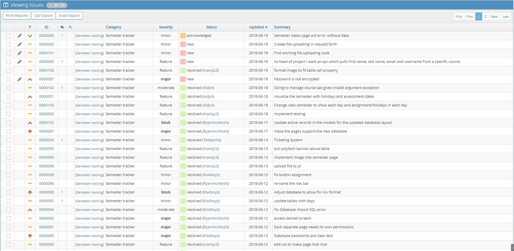
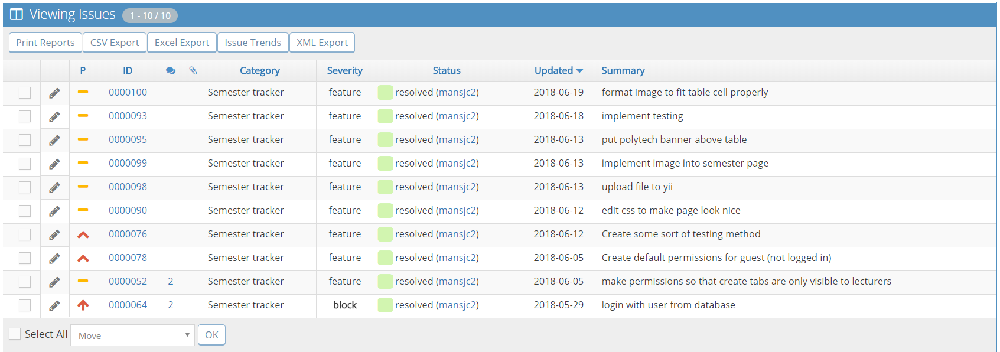
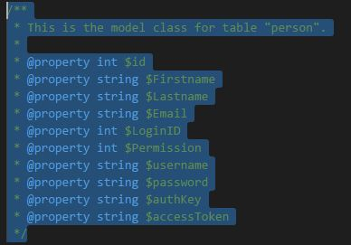
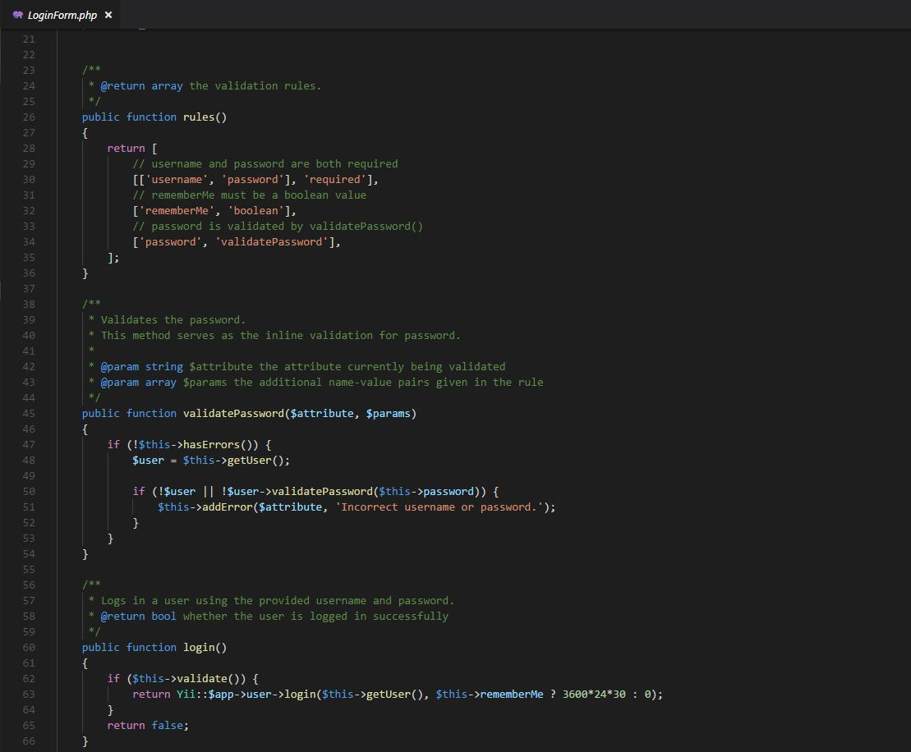
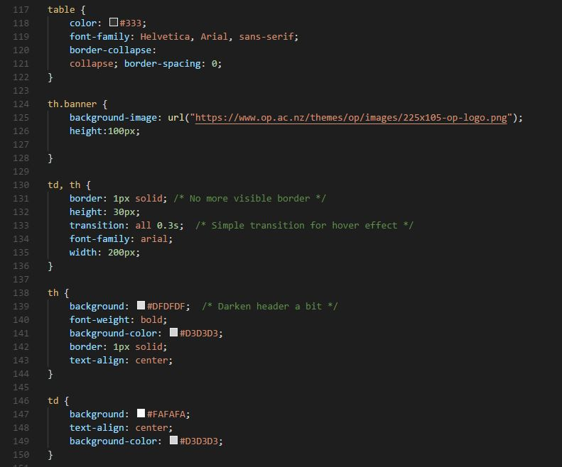
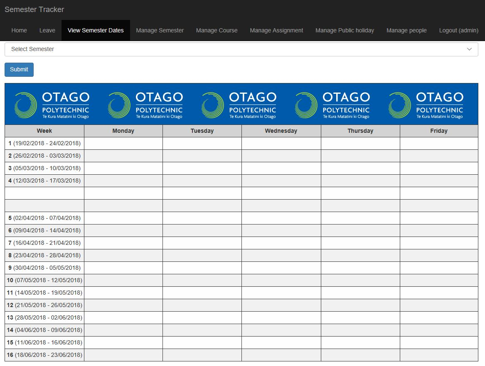

The Semester Tracker software was written in Php, which was a language I had no previous experience in. Learning a new language was extremely challenging for me as I am not a strong programmer and this was a little intimidating during the start of the project. What worried me the most was my contribution to the team was most likely going to be less than most others in the group and to me that was upsetting as I am a person who likes to be a valuable team member.
Spending the first 2 weeks of this project watching other team members code was a start for my learning process. I would sit beside Aidyn and he would explain to me how certain pieces of code worked and slowly i built up a small knowledge of Php's basic syntax. When given a task I would watch a lot of youtube tutorials about how to use Yii (the framework we used in the project). And whenever i couldn't understand something I would make sure I would ask for help from a team member, which most of the time resulted in me being able to complete the task which was a big confidence booster for me.
I believe the contribution I made to the group was sufficient enough to be valued by my team members, however I know that if I had past experience in the Php language, I would have definately been able to complete more tasks as the time spent on learning the language could be spent on developing.
'bugtracking.aperion-industries.com' was Jordans own website which was used as a template to create tickets, report bugs and overall view progress. It was a great alternative to a KANBAN board in the sense that we would be able to assign users (group members) a user story. Those users could then open a ticket with the description of the user story, assign it a level of importance ranging from minor or low, to major or critical, and select its type whether it be a bug to fix, feature to implement or a suggestion. Once it had been completed the assigned user would then log on to the website and close it with the label "resolved". This website automatically tracked each users progress which was extremely useful to us.
Below are the tickets resolved by me, showing evidence of the work completed either by me or with the help of a team member:
The login system of the Semester Tracker was assigned to me. This development stage took around 3 to 4 weeks for me to complete and make fully functional. It required me to use Gii, a front-end model generator through the Yii framework. Gii allowed me to generate a 'Person' class through the web page that was directly imported into the Php code, which I was then able to edit accordingly with the same class and table names that the database used.
What had been previously developed was static code inside the login form which we could use to log in. We needed to remove this in order to have our login system to work in the way that it could take a person from the 'person' table inside our database, and log in successfully without any need to have a manual entry inside the Php code.
The model class used in the database:
These fields were mandatory to create an entry to the database table 'person', however I did not need to use all of these fields to successfully log a person in. All that was needed to log in was the correct 'username' and 'password' of a database entry in the table 'person'. As shown below is the piece of code validating the password by comparing it to the entry inside of the database, and the login function.
Throughout developing this function, I watched a youtube tutorial on how to log a user in from a database in Yii. It was extremely helpful as it showed a full guide on how to implement login functionality in Php.
I was also assigned the task of editing CSS code for the semester dates page, starting with making the table look more professional and to add a banner at the top by uploading a file to Yii. To do this i used previous skills learnt in Web 1 around CSS, manipulating attributes such as font, table columns and rows, borders, alignment, width and height.
Shown above are the changes to the CSS and below is the result of the changes made in the Semester page.
